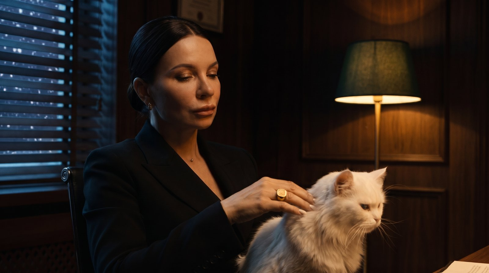
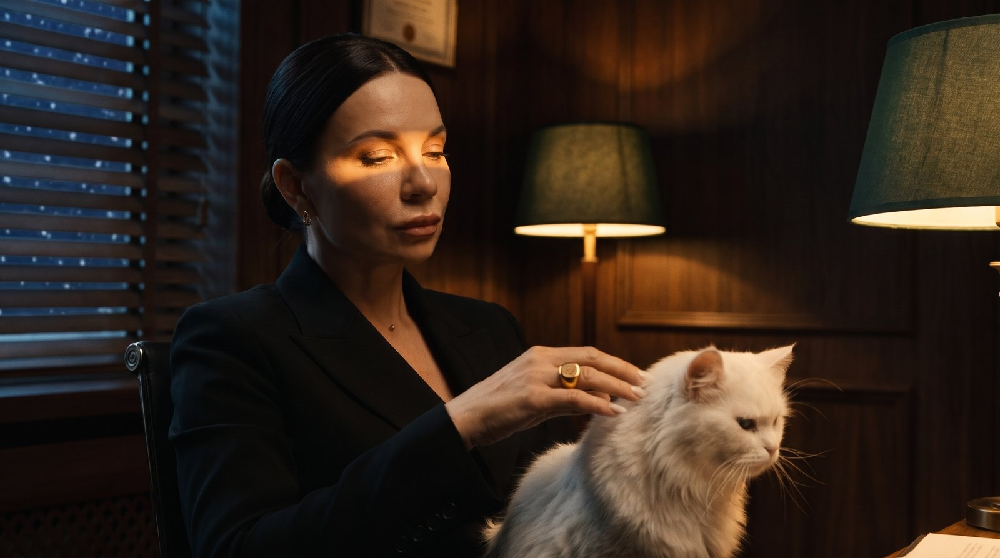
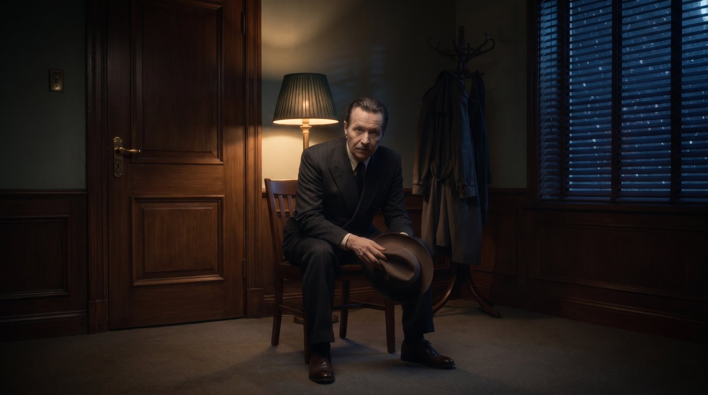

Ночь: Настя и менеджер
План комнаты: окно с жалюзи за Настей, дверь напротив, за менеджером. Свет только от лампы с зелёным тканевым абажуром.
Настя ночью (из кадра 5): выбери
Из этого кадра оживлю её ответ: смотрит на него, рука спокойно лежит на коте, гладит еле-еле, говорит плавно, без агрессии.
Настя A

Одна лампа, лицо мягко освещено.
Настя B

Полоса света на глазах, но в кадре две лампы.
Менеджер: сидит на стуле перед ней, за ним дверь
Он: «Крёстная… мне очень нужен Дед Мороз. Это вопрос жизни и смерти. Я прошу тебя… помоги».
Менеджер 1

Через её плечо, он на стуле перед ней, за ним дверь.
Менеджер 2

Он один, шире, за ним дверь и вешалка.